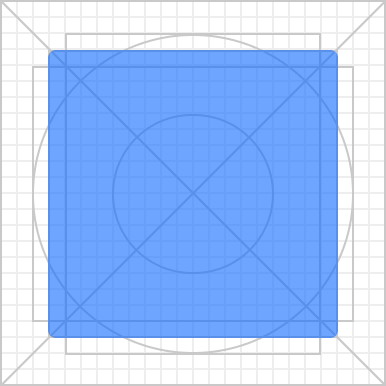
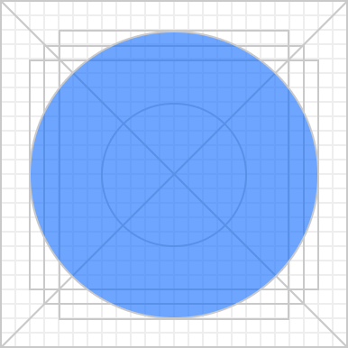
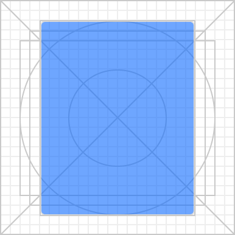
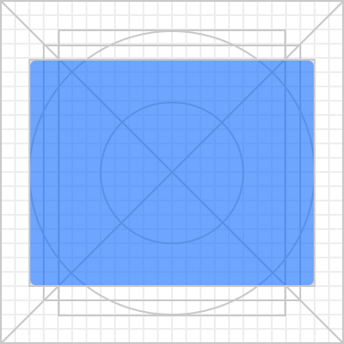
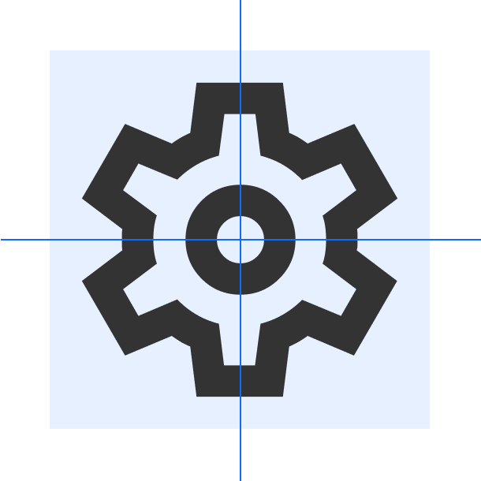
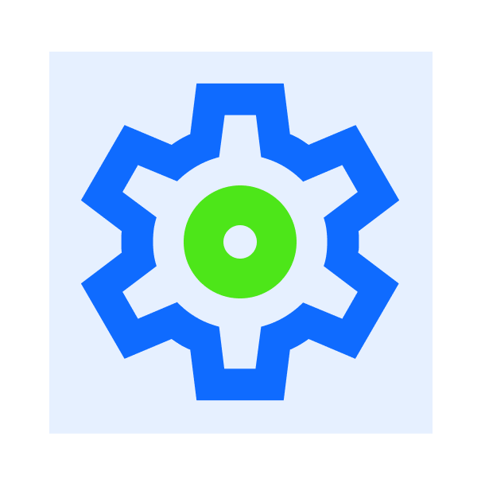

가능한 다누시스 디자인 시스템에 미리 정의되어 있는 아이콘 아이템을 활용하여 제작합니다. 필요한 아이콘이 없을 시 구글 머테리얼 디자인, IBM의 카본 디자인 스타일을 차용하여 제작합니다. 원하는 의미를 전달할 수 있는 범위에서 최대한 단순한 형태로 제작하여 사용자에게 아이콘이 바로 인식되도록 합니다. 정사각형 프레임 안에 패딩을 포함하여 제작합니다.
Icon Scale
아이콘 기본 사이즈는 24*24 사이즈입니다. 상황에 따라 18*18 사이즈, 36*36 사이즈, 48*48 사이즈를 사용할 수 있습니다. 기본 아이콘 24*24 사이즈의 비율에 비례하여 사용해주세요. 아이콘 포맷은 SVG로만 사용 가능합니다.
18px
24px
36px
48px
Padding & Space
기본 사이즈 24*24 기준, 최대 20*20 프레임 안에 아이콘을 그리며 위 아래, 양 옆 패딩 값은 2를 확보하여 아이콘을 그려줍니다.
- 
- 
Key Lines
기본 사이즈 24*24 기준, 최대 20*20 프레임 안에 아이콘을 그리며 위 아래, 양 옆 패딩 값은 2를 확보하여 아이콘을 그려줍니다.
- 
- 
- 
- 
Stroke
기본 Stroke는 2이며 기본 사이즈(24*24)에서 제작 가능한 다른 사이즈를 변형하여 사용해주세요.
Alignment
아이콘 프레임 안에서 아이콘을 항상 가운데 정렬로 배치해주세요. 텍스트와 함께 병용하여 사용할 때에도 가운데 정렬에 맞춰 제작해주세요.
-

사용 가능한 정렬
-
사용 불가능한 정렬
-
사용 가능한 정렬
-
사용 불가능한 정렬
Color
아이콘 컬러는 통일하여 사용해주세요. 한 가지 아이콘 내에서 2~3가지 컬러 사용을 하지마세요.
-
무채색 컬러 사용 허용 범위
-
무채색 컬러 사용 불가 범위
-
유채색 컬러 사용 허용 범위
-

유채색 컬러 사용 불가 범위
Angles
앵글은 기본 45°를 기본으로 하되, 15° 단위까지 허용합니다.